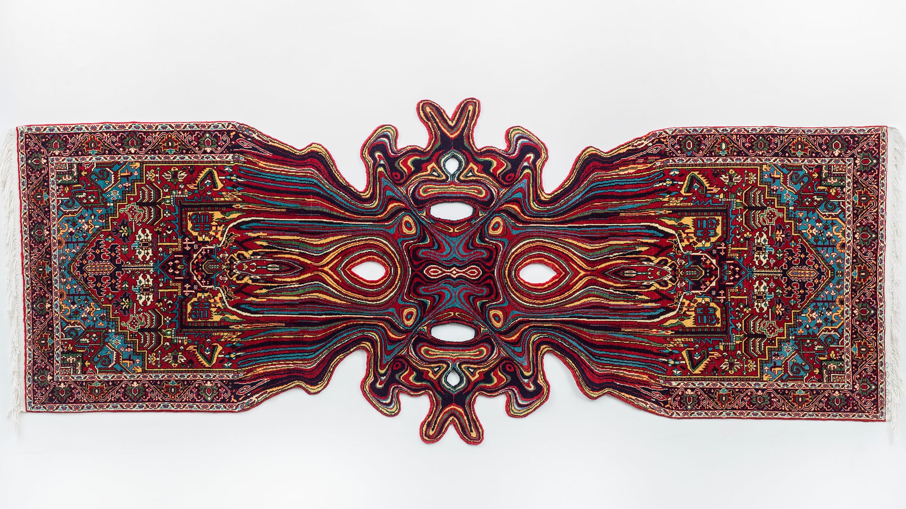

Faig Ahmed (born 1982 in Sumqayit, Azerbaijan) is an Azerbaijani contemporary visual artist who is best known for his surrealist weavings which integrate visual distortions into traditional oriental rugs.
Ahmed graduated from the sculpture program at the Azerbaijan State Academy of Fine Arts in Baku in 2004. In 2007, Ahmed's work was included in the Azerbaijan's first pavilion in the Venice Biennalle.
While Ahmed has created artworks in multiple media, including sculpture, video, and installation, he is best known for his surrealist sculptural textiles, which apply optical illusions in the form of often psychedelic visual manipulations (including warping, glitching, melting, pixelating, and unraveling) to traditional Islamic rugs. The textiles are manufactured by a group of skilled weavers who follow Ahmed's designs paying strict attention to traditional Azerbaijani weaving techniques.
Ahmed's rug sculptures are held in notable public collections, including the Los Angeles County Museum of Art, Seattle Art Museum, and RISD Museum.
